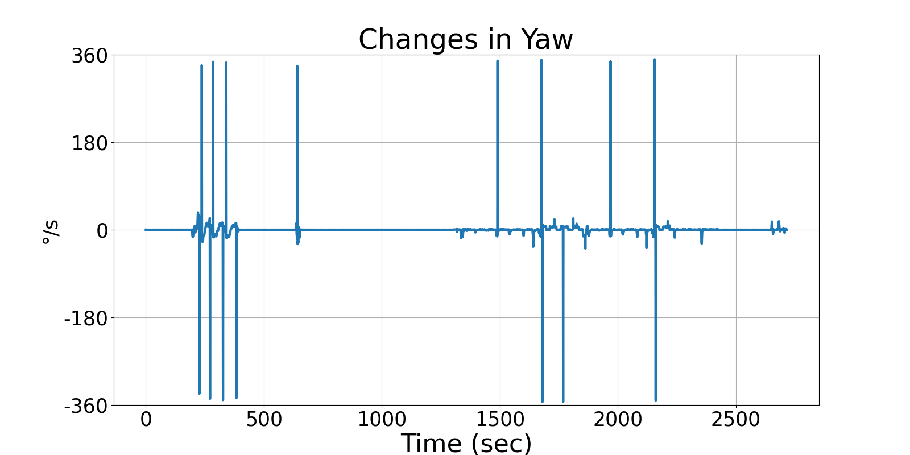
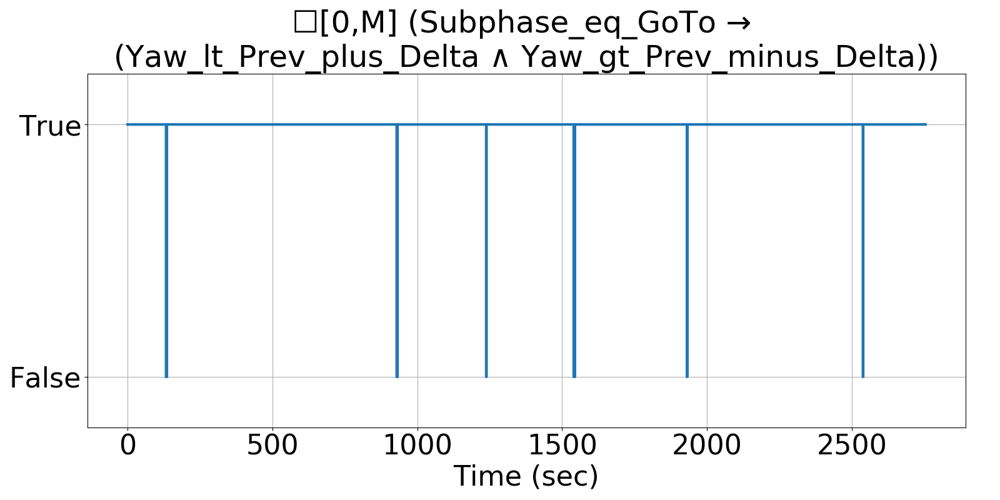

Integrating Runtime Verification into an
Automated UAS Traffic Management System
Matthew Cauwels, Abigail Hammer, Benjamin Hertz, Phillip H. Jones, Kristin Y. Rozier
This webpage contains supplementary specifications for "Integrating Runtime Verification into an
Automated UAS Traffic Management System" by M. Cauwels, A. Hammer, B. Hertz, P. H. Jones, and K. Y. Rozier
RC_UAS_5
Specification Description
Yaw will not change by more than YAW_DELTA_MAX each sample instance when the Subphase is "Go to" at any time
Signals Required
Subphase, Yaw
Boolean Conversion of Signals to Atomic Inputs
Subphase_eq_GoTo: Subphase =="Go to"
Yaw_lt_Prev_plus_Delta: Yaw < PREV_YAW + YAW_DELTA_MAX
Yaw_gt_Prev_minus_Delta: Yaw > PREV_YAW - DELTA_MAXMLTL Specification
☐[0,M] (Subphase_eq_GoTo → (Yaw_lt_Prev_plus_Delta ∧ Yaw_gt_Prev_minus_Delta) )
Fault Explanation
UAS should be flying relatively straight: it is turning more than typical
Additional Notes
The rate at which the UAS can turn during "Go To" should be low because in the phase the aircraft should be flying in one direction. YAW_DELTA_MAX would need to be determined experimentally
Figures

